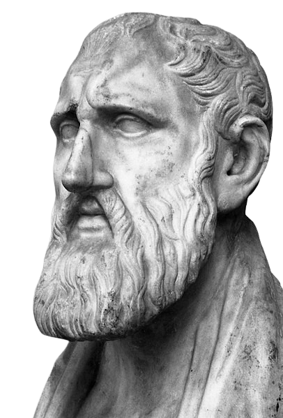

Conheça a filosofia do
O estoicismo ensina como viver uma boa vida, a partir de ações práticas e mentais como, manter o foco nas coisas que podem ser controladas. As ideias difundidas por essa escola filosófica ajudam a lidar com o estresse e a ansiedade, tratar a insegurança, indisposição, cansaço, sentimentos e sensações de negatividade. Quem pratica o estoicismo também aprende a manter o autocontrole, independentemente da situação, pois com uma mente calma, focada no que pode ser feito, é possível atravessar qualquer circunstância.
A prática mais importante da filosofia estoica é diferenciar entre o que podemos mudar e o que não podemos. Sobre o que temos influência e o que não temos. Um voo está atrasado devido ao clima – nenhuma quantidade de gritos com um representante da companhia aérea terminará uma tempestade. Nenhuma quantidade de desejos o tornará mais alto, mais baixo ou nascerá em um país diferente. Não importa o quanto você tente, você não pode fazer alguém como você. Além disso, o tempo gasto se arremessando contra esses objetos imóveis é o tempo não gasto nas coisas que podemos mudar. Volte a esta pergunta diariamente – em todas as situações difíceis. Se você se concentrar em esclarecer quais partes do seu dia estão sob seu controle e quais não estão, você não apenas ficará mais feliz, como também terá uma vantagem distinta sobre outras pessoas que não perceberem que estão travando uma batalha invencível.
Epicteto, o escravo. Marco Aurélio, o imperador. Sêneca, o dramaturgo. Esses três homens radicalmente diferentes levaram vidas radicalmente diferentes. Mas eles pareciam ter um hábito em comum: o registro em um diário. Seria Epicteto quem advertiria seus alunos de que a filosofia era algo que eles deveriam “escrever dia após dia”, que essa escrita era como eles “deveriam se exercitar”. O horário favorito de Sêneca para fazer diário era à noite. Quando a escuridão cai e sua esposa adormece, ele explica a um amigo: “Examino meu dia inteiro e volto ao que fiz e disse, sem esconder nada de mim mesmo, sem deixar passar nada”. Então ele ia para a cama, descobrindo que “o sono que se segue a esse autoexame” era particularmente doce. E Marco, ele foi o mais prodigioso dos que escreveram diários, e temos a sorte de que seus escritos sobreviveram a nós, apropriadamente intitulados, Τὰ εἰς ἑαυτόν (Ta eis heauton), ou “para si mesmo”. No estoicismo, a arte de escrever um diário é mais do que um simples diário. Essa prática diária é a filosofia. Preparando-se para o dia seguinte. Refletindo sobre o dia que passou. Lembrar a si mesmo da sabedoria que aprendemos de nossos professores, de nossa leitura, de nossas próprias experiências. Não basta ouvir essas lições uma vez; em vez disso, as praticamos repetidamente, as revertemos em sua mente e, o mais importante, as anotamos e as sentimos fluindo pelos dedos ao fazê-lo. O estoicismo é projetado para ser uma prática e uma rotina. Não é uma filosofia que você lê uma vez e entende magicamente no nível da alma. Não, é uma busca ao longo da vida que requer diligência, repetição e concentração. (Pierre Hadot chamou de exercício espiritual). Dessa maneira, o registro no diário é estoicismo. É quase impossível ter um sem o outro.
Sêneca, que desfrutava de grande riqueza como conselheiro de Nero, sugeriu que deveríamos reservar um certo número de dias por mês para praticar a pobreza. Tome um pouco de comida, vista suas piores roupas, afaste-se do conforto de sua casa e cama. Coloque-se frente a frente com a falta, ele disse, e você se perguntará: “É isso que eu costumava temer?”É importante lembrar que este é um exercício e não um dispositivo retórico. Ele não quer dizer “pensar em” infortúnio, ele diz para vivê-lo. O conforto é o pior tipo de escravidão, porque você sempre tem medo de que algo ou alguém o leve embora. Mas se você não pode apenas antecipar, mas praticar o infortúnio, o acaso perde a capacidade de atrapalhar sua vida.Emoções como ansiedade e medo têm raízes na incerteza e raramente na experiência. Quem fez uma grande aposta em si mesmo sabe quanta energia os dois estados podem consumir. A solução é fazer algo sobre essa ignorância. Familiarize-se com as coisas, os piores cenários, dos quais você tem medo. Pratique o que você teme, seja uma simulação em sua mente ou na vida real. A desvantagem é quase sempre reversível ou transitória.Para mais posts como esse, podcast e vídeos, acompanhe o nosso blog e conecte-se conosco em nossas redes sociais. E não se esqueça de compartilhar com seus amigos.
Estudar essa área significa considerar diferentes argumentos e avaliar a validade de cada um deles. Treinar sua mente para pensar crítica e analiticamente é um dos muitos benefícios de escolhê-la, pois pode ajudar em sua própria vida ao tomar decisões e avaliar seus próprios valores.
Gosta do assunto? Preencha o formulário e saiba mais!